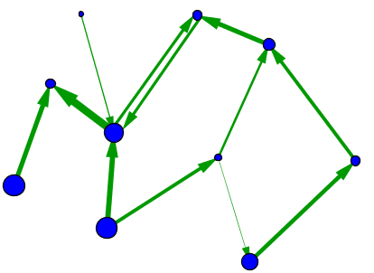

Workshop resources
This page hosts the resources and links for the workshop "Digital Humanities for Teaching: Mapping Viking Travels and Persons in Eirik the Red's Saga" at the Symposium on Medieval and Renaissance Studies at St. Louis University on Monday, June 9, 2025.
First steps
- Open this page on your own laptop so you can click links directly: https://haggis78.github.io/workshop/smrs2025.html.
- Go to https://kumu.io/ and click the blue "JOIN FOR FREE" button create an account.
- Go to https://recogito.pelagios.org/ and click the blue "Register for Recogito" button to create an account.
Part 1: Quick Tools
Distant Reading with Voyant Tools
Link: https://voyant-tools.org/
Project Gutenberg link for txt file of Eirik's Saga: https://www.gutenberg.org/files/17946/17946-h/17946-h.htm
Stripped text of Eirik's Saga: Click here to download
Quick Mapping with Google My Maps
- Google My Maps link: https://www.google.com/maps/d/u/0/
- Sign into your Google account if prompted
- Click "Create a New Map"
- Add locations:
- Method A: Search for a location; then click "add to map"
- Method B: Click on the map to drop a pin; supply a label and, if you want, a link to information
- Method C: Add a line between two points by clicking; give it a label
Part 2: Network Terms
Basic terms of network graphs
- nodes
- edges
- directed vs. undirected
- degree
- edge weighting
A simple undirected network, without edge weighting or node sizing

A directed network, with node sizing and edge weighting

Source of images: mathinsight.org: An introduction to networks. For more on networks, see there as well as the first part of Elisa Beshero-Bondar's introduction to networks.
Part 3: Creating a network graph: Step by step
Looking at our data
The following files record the relationships (kinship and other affinities) among persons in Eirik's Saga.
Our files were generated by a student and are used with the student's permission. They should only be used within the context of this workshop and by its participants and may not be duplicated or shared.
Nodes table
Download csv nodes file
Edges table
Download csv edges file
Uploading your data
- Go to https://kumu.io/. If you did not yet create an account, click the blue "JOIN FOR FREE" button and do so now.
- Click the green "New Project" button at upper right.
- Give the project a name. Description is optional. Tick "I'm not a robot" and then "Create project".
- Optionally, give your map a name.
- Pick the "Systems" template.
- Our graph is directional, so choose "Connections will be => Directed", then "Get started".
- You now have a blank graph. To upload data, click the green plus button at bottom center, and choose "Import".
- Start with your nodes table. You can "Choose file" and upload submission-nodes.csv from your computer, or paste in the link to a Google Sheet if that's where your data are. Then click "Import spreadsheet".
- You now see your data in "Import review". By naming our first two columns "Label" and "Type", we have already told Kumu what those columns represent; if you used different column labels, you would need to use dropdowns to select (at minimum) what column to use for Label. Click "Save import". You will now see all of your nodes.
- Now do the same with your edges table. You can "Choose file" and upload submission-edges.csv from your computer, or paste in the link to a Google Sheet if that's where your data are. Then click "Import spreadsheet".
- You will again see your data in "Import review". By naming our first two columngs "From" and "To", we have already told Kumu what those columns represent; if you used different column labels, you would need to use dropdowns to select what column to use for each, even if your graph is non-directional or bi-directional. Click "Save import". You will now see all of your edges.
Styling your network graph
- Click the slider icon at the upper right. This opens the control panel.
- Start with "Size by". Select "frequency". This will size the nodes according to how often someone appears.
- Next, click "Color by". Select "Element Type" to select that column from our data. This will turn the Witness nodes one color and the Submitter nodes another. You can also change the color scheme.
- Now let's spread out the graph so we can see better. Click "Customize defaults", go down to Layout Settings, and change Preset from auto to hairball.
- Try dragging nodes around; you'll see them pull on one another. To pin them in place, so you can drag them one at a time, go down to "Layout", and change from force-directed to "off".
- Once you like what you see, click "Save". If you want to start your styling over, click "Revert", and it will go back to the last saved version.
Sharing your network graph
Once you have your graph in the form you want to share, click the project name in the upper left corner. Select "EMBEDS < / > " . Give it a title. Optionally, select "Include map overview in sidebar" and/or "Include current position and scale", then "Create embed / share link". You'll get both a read-only link and an html embed code. If using this as a classroom assignment, students can submit this to you for you to view and grade.
Tagging text in Recogito
Preparing to tag
- Go to https://recogito.pelagios.org/. If you did not do so earlier, click the blue "Register for Recogito" button and create an account now. If you have an account, click "Log In" at the top right.
- If you did not do so already, click here to download the cleamed text of Eirik's Saga.
- In Recogito, create a new project by clicking the + New button in the upper left. As we are working with just one file, select "File upload". Navigate to your Download folder to locate the file Eiriks-saga-text-cleaned.txt. Click "Open" to upload it to Recogito. In a moment, you will have it listed on Recogito as a document; click to open.
- At the top, make sure Annotation Mode is selected as Normal, and change Colour to By Entity Type.
Tagging Persons
- Highlight "Olaf the White". Select "Person". Click "Add tag..." and type in "King Olaf the White Ingjaldson". Click "OK" to save.
- Similarly, tag "King Ingjald Helgison".
- When you try to tag "Helgi" as "Helgi Olafson", it will ask if you want to tag all instances of "Helgi" in the text the same way. Select no: there's a different Helgi somewhere else.
- Tag the rest of the people in the sentence.
- If any of the highlights are yellow rather than blue, you forgot to select "Person". Go back and rectify that.
Tagging and Viewing Places
- Highlight "Dublin" and select "Place". Recogito should automatically match Dublin in its internal gazetteers. Click "Confirm" and then "OK".
- Do the same with "Ireland" and "Hebrides".
- At the top, click the "Map View" icon. You'll see a dot on Dublin, but not on Ireland or the Hebrides. Why?
- Click the Dublin dot to see the relevant text.
- Note: It is also possible to tag Events, but we won't be using that today.
Tagging Relationships
- Return to "Document View" (top left, square with pencil icon). Scroll back down to your tagged persons.
- Under "Annotation Mode" in the top menu, select "Relations".
- Click on King Ingjald, then on Olaf the White. In the "Tag..." space, type "father of" and click the checkmark.
- Similarly tag the relations among the other people whose names you've tagged.
- Note: It is possible to tag relationships among any type of entity: persons, places, events. Our task today deals only with relations among persons.
Exporting Recogito Data
Click the "Download Options" icon at the top of the page.
- Option 1: Gephi Nodes and Edges Tables
- Option 2: Annotations CSV and Relations Basic CSV; could be modified for your own uses
- Option 3: TEI XML.
Processing Recogito XML Download through XQuery (demonstration only)
XQuery is a query language that allows the user to treat an XML document like a database. It can be written to locate whatever information you want in the XML and create an output file in whatever format you choose--but it does require understanding both XML and the output format. It also requires use of either eXist-DB or oXygen XML Editor software. eXist-DB is free, but I am not current on its use. oXygen is proprietary and expensive, but students can download and install it with a free 30-day trial license.
The XQuery files I created for this project are structurally defined and content-agnostic. This means they should work whether your input document is an Icelandic saga or a telephone book. Students don't have to write a single line of code, or even understand how it works. All they have to do is follow directions and hit enter to generate the CSV files for Kumu based on their Recogito markup. I also wrote XQuery files for relations between people and places, and between people and events. If you are interested in trying out this activity, let me know and I'll be happy to offer further explanation, demonstration, and support.
Authored by: William H. (Bill) Campbell, Assistant Professor of History and Digital Studies, University of Pittsburgh at Greensburg, whc7@pitt.edu
The content on this page, with the exception of the nodes and edges table files, is under a Creative Commons CC-BY-NC 4.0 license. You may use, adapt, and share it freely, with attribution, for non-commercial purposes only.
The nodes and edges table files, and the TEI XML file, are only for use within the context of the workshop by its participants. They may not be shared, duplicated, or used for any other purposes.